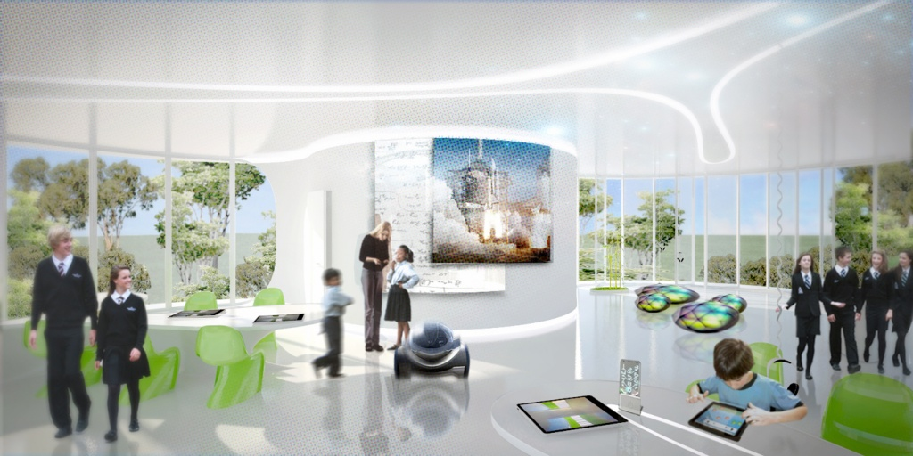

The Road to 8 Billion
In 2005, Facebook had 6 million subscribers in the U.S. and Canada. In the third quarter of 2012, Facebook became the first social media platform in the world to reach one billion subscribers. Now, in 2020, we have over three billion users who are part of the Facebook network. The next step is to bring on six billion total members into our collective, as we prepare to shape the future.
Facebook's initial mission was to "build community and bring the world closer together," and now we have brought over half of the world's overall population to share one digital space; we are on our way to effectively becoming a microcosm of the planet we live on. There are currently 7.6 billion humans on planet Earth. Almost half the population have Facebook accounts. Never has there been such a large percentage of the population all actively part of one thing at the same time, save for religion. Therefore, it is part of our responsibility as the world's leading social media collective to interconnect and elevate our herd as best we can, while allowing the mass consciousness of Facebook to grow and spread.
We believe Facebook can serve as a model for what the future age of industrialism can achieve and aspire to. It's just not about creating new tools for the necessities of life, but creating a new standard of life that has never achieved before, that has only previously existed in the imagination. This is the next step in societal evolution. The United Nations census projects that by the year 2100, there will be eleven billion people on the planet. The more people we have, the more access Facebook has to create a bigger and bigger digital world for everyone to be a part of, as well as to show their individuality as part of the Facebook collective.
Facebook is one of the unique leaders that has the capacity to shape the next stage of world development. We have effortlessly spread from person to person, community to community, and country to country, not unlike a neural network in the human brain. Essentially, Facebook has gone viral, and set the standard of what going viral constitutes. By allowing people to share themselves online, they connect with each other. They become part of a symbiotic collective consciousness, independent of itself. This is what Facebook is, what it will be, and what other like-minded platforms aspire to be. We are striving to make this not just a reality, but an axiomatic foundation of the digital space.
The Virus Model
The Next Generation
The world can always be brought closer together. Even once everyone on earth has an internet connection or a Facebook account, we will still need stronger connection. Inspired by our Founder Mark's own success story, we know that the development of coding skills in our youth can lead to an extremely fruitful future (don't forget, Mark's first job after only two years of college was CEO of Facebook!). That's why we have taken it upon ourselves to establish Facebook Academies, alternative high schools for teens with relevant coding experience and a passion for bettering our community. Facebook Academies exist to keep alive the dream of creating an open and connected global community.

Sheryl Sandberg's tireless commitment to empowering women has led to the creation of Facebook Academy's sister school, the Sandberg Academy for Ambitious Girls, a requisite component for all our female students providing invaluable supplementary training. The Academy will equip girls with the wisdom that Sheryl acquired over the course of her trailblazing career. Courses include Beyond the Pantsuit, Diplomacy in Sexual Rejection, 21st Century Approaches to Sitting, Leaning In: 21st Century and Beyond, and Decorous Drinking. Our girls come away from the Academy knowing that the only thing that can keep them from the head of the conference table is self-doubt.
Upon graduation, students are offered contracts for a job at Facebook that reflect their aptitudes and passions. International students will often return to their home country to spearhead initiatives that integrate isolated regions into our global community. Graduates are the torchbearers of our community, working to shrink the earth to the size of a monitor.
How to Join the Fleet: Because accessibility and efficiency are our business, anyone with a computer can apply to Facebook Academy via a streamlined application process on Facebook. Through their profiles, prospective students will complete a series of application assessments including a community building trial on Farmville, a pet facial analysis quiz, and a content reporting simulation. In place of the personal essay, each applicant is asked to create a Facebook Live video at an event or location that encompasses their passion. There are no language requirements but applicants must have a demonstrable history of Facebook use.
The Faces of Facebook
TK soon
Customer service sidebar!
(i swear it'll work eventually)